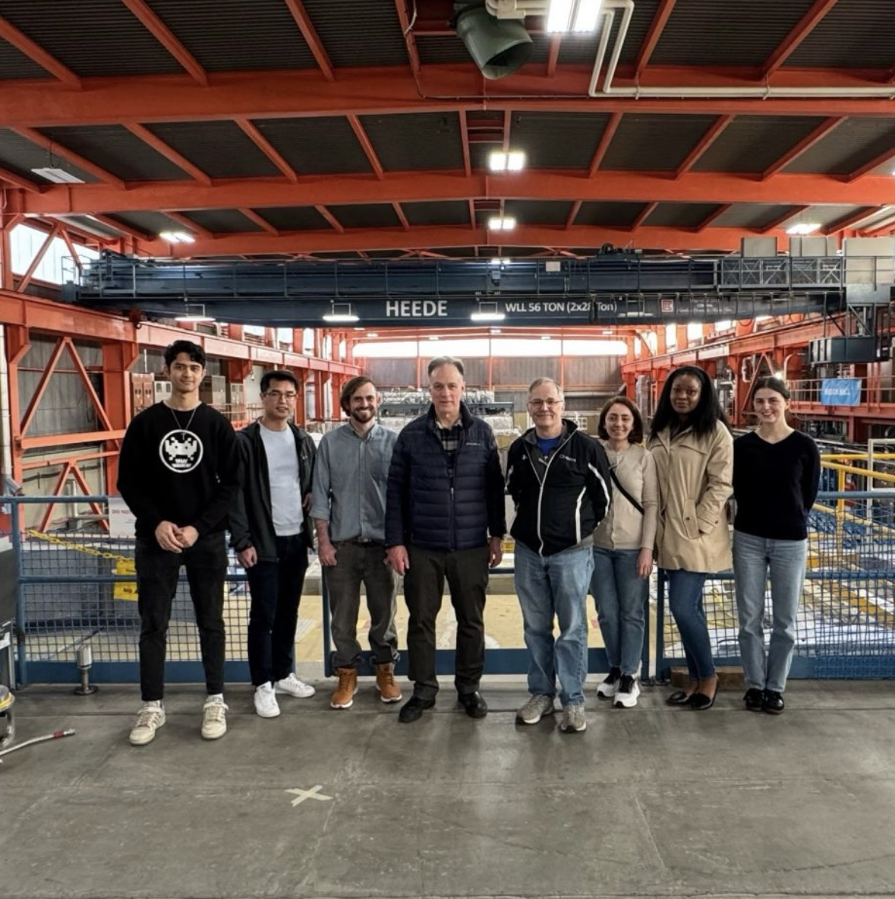

Some of the ARTMS development team during a TRIUMF visit - standing on top of the 520 MeV cyclotron (the largest in the world!).
ARTMS Inc.
Jan. 2025 - Aug. 2025
Mechanical / Mechatronics Engineering Intern
Hardware development to facilitate solid-target radioisotope production on cyclotrons across the world · Burnaby, BC
Over eight months at ARTMS, I designed, built, and tested mechanical and electromechanical hardware for precision systems operating in demanding, high-radiation environments. My work spanned sealed thermal instrumentation, custom electronics, and hands-on assembly and integration, giving me end-to-end experience carrying a design from concept through testing and into the field.
Mechanical Design
DFM
Fluid/Pneumatic System Testing
Sensor/Actuator Integration
GD&T
PCB Design
Instrumentation
Hardware Testing